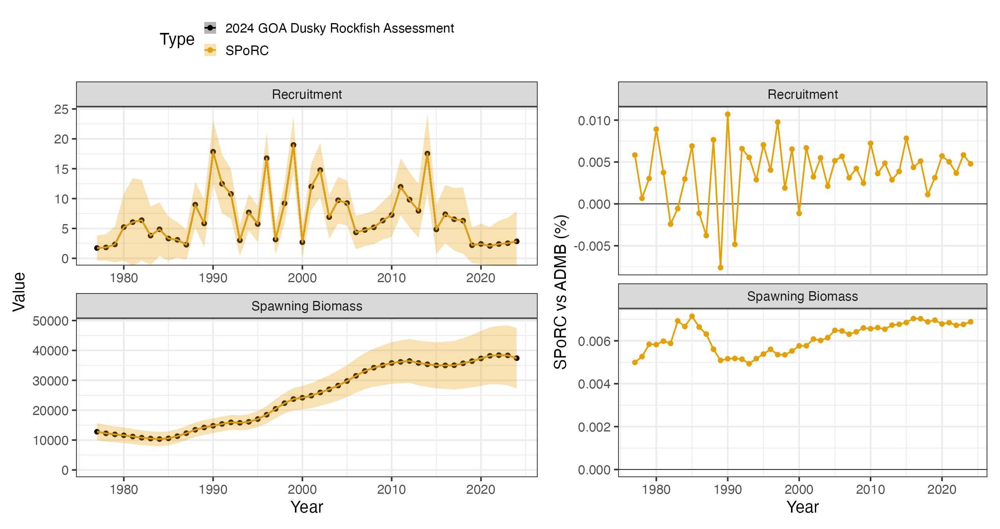
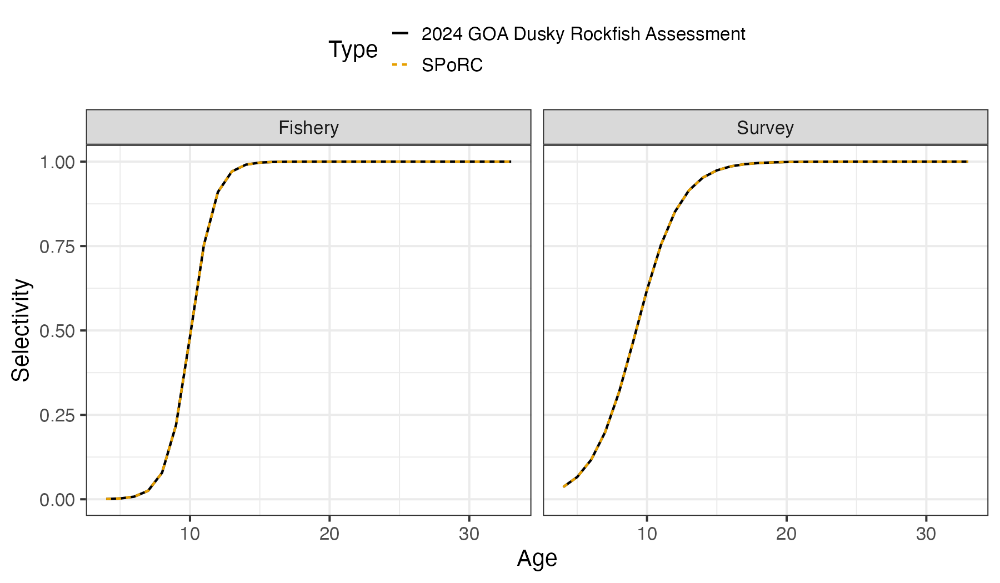

Case Study: Gulf of Alaska Dusky Rockfish
x_goa_dusky_rockfish_case_study.RmdOverview
This case study reproduces the 2024 Gulf of Alaska dusky rockfish
assessment in SPoRC. Every structural choice below follows
the assessment rather than SPoRC’s defaults, and the two
fits agree to a median of
percent in spawning biomass.
The model is single region, single sex, single season, with one fishery fleet and one survey:
| Source | Years | Observations | Likelihood |
|---|---|---|---|
| Catch | 1977–2024 | 48 | Lognormal, weighted |
| Bottom trawl survey biomass | 1990–2023 | 16 | Lognormal |
| Fishery age compositions | 2000–2022 | 15 | Multinomial |
| Fishery length compositions | 1991–2023 | 18 | Multinomial |
| Survey age compositions | 1990–2023 | 16 | Multinomial |
Model ages run 4 to 33 with a plus group, and lengths 21 to 52 cm.
Model dimensions
Because the model is single region and single sex, the population, region, season and sex subscripts used in the model equations all collapse to one, and are dropped from the notation below.
input_list <- Setup_Mod_Dim(
n_pop = dat$n_pop,
natal_region = dat$natal_region,
years = dat$years,
ages = dat$mod_ages,
lens = dat$lens,
n_regions = dat$n_regions,
n_sexes = dat$n_sexes,
n_fish_fleets = dat$n_fish_fleets,
n_srv_fleets = dat$n_srv_fleets,
n_seas = dat$n_seas,
verbose = FALSE,
store_config = TRUE
)Recruitment
Recruitment is a mean with annual deviations rather than a stock recruit function:
with
fixed at
,
roughly
.
The bias ramp is switched on but every ramp year is set to the terminal
year, which leaves the ramp at zero over the whole series and so leaves
recruitment uncorrected. That combination is deliberate: it reads as the
assessment’s own convention rather than as SPoRC’s default,
and it is what do_rec_bias_ramp = 1 with
bias_year at the terminal year means. Spawning occurs at
the start of the year.
input_list <- Setup_Mod_Rec(
input_list = input_list,
do_rec_bias_ramp = 1,
bias_year = rep(length(dat$years), 4),
sigmaR_switch = 1,
ln_sigmaR = array(-0.1068576, dim = c(2, input_list$data$n_pop, input_list$data$n_regions)),
rec_model = "mean_rec",
sigmaR_spec = "fix",
init_age_strc = 1,
ln_global_R0 = log(2.7),
t_spawn = dat$spwn_month
)Biological dynamics
Natural mortality is fixed at for every age and year, so no prior is needed. Length compositions are fit through a size at age transition matrix, and age compositions pass through an ageing error matrix.
input_list <- Setup_Mod_Biologicals(
input_list = input_list,
WAA = dat$waa_arr,
MatAA = dat$mataa_arr,
fit_lengths = 1,
SizeAgeTrans = dat$sizeage,
AgeingError = dat$age_error_matrix,
M_spec = "fix",
Fixed_natmort = dat$fix_natmort,
addtocomp = 0.00001
)Movement and tagging
The model is single region, so movement is an identity matrix and no tagging data are used. Both still have to be declared.
input_list <- Setup_Mod_Movement(
input_list = input_list,
use_fixed_movement = 1,
Fixed_Movement = NA,
do_recruits_move = 0
)
input_list <- Setup_Mod_Tagging(input_list = input_list, use_conv_fish_tagging = 0)Catch and fishing mortality
The assessment writes its catch and F statements as weighted sums of
squares. A weighted sum of squares and a normal likelihood with a fixed
standard deviation are the same statement up to a constant, related by
.
Here
and
are both fixed at
,
which makes the quadratic term an unweighted sum of squares, and the
year specific catch weights are then applied through
Wt_Catch in the weighting section.
suppressWarnings(
input_list <- Setup_Mod_Catch_and_F(
input_list = input_list,
ObsCatch = dat$ObsCatch,
UseCatch = dat$UseCatch,
Use_F_pen = 1,
sigmaC_spec = "fix",
ln_sigmaC = array(log(sqrt(1 / 2)), dim = c(input_list$data$n_regions,
length(input_list$data$years),
input_list$data$n_seas,
input_list$data$n_fish_fleets)),
ln_sigmaF = array(log(sqrt(1 / 2)), dim = c(input_list$data$n_regions,
input_list$data$n_seas,
input_list$data$n_fish_fleets))
)
)Fishery compositions
There is no fishery index in this assessment, only compositions, so
fish_idx_type is "none". Both age and length
compositions are aggregated over the region and fit multinomially.
input_list <- Setup_Mod_FishIdx_and_Comps(
input_list = input_list,
ObsFishIdx = dat$ObsFishIdx,
ObsFishIdx_SE = dat$ObsFishIdx_SE,
UseFishIdx = dat$UseFishIdx,
ObsFishAgeComps = dat$ObsFishAgeComps,
UseFishAgeComps = dat$UseFishAgeComps,
ISS_FishAgeComps = dat$ISS_FishAgeComps,
ObsFishLenComps = dat$ObsFishLenComps,
UseFishLenComps = dat$UseFishLenComps,
ISS_FishLenComps = dat$ISS_FishLenComps,
fish_idx_type = c("none"),
FishAgeComps_LikeType = c("Multinomial"),
FishLenComps_LikeType = c("Multinomial"),
FishAgeComps_Type = c("agg_Year_1-terminal_Fleet_1"),
FishLenComps_Type = c("agg_Year_1-terminal_Fleet_1")
)Survey index and compositions
The survey index is lognormal, so its standard error has to be on the log scale. The assessment reports an arithmetic standard error, and the conversion is the coefficient of variation, which for a lognormal is the log scale standard deviation to first order. That is the only transformation applied to the survey data.
input_list <- Setup_Mod_SrvIdx_and_Comps(
input_list = input_list,
ObsSrvIdx = dat$ObsSrvIdx,
# the assessment reports an arithmetic SE, so it is divided by the index
ObsSrvIdx_SE = dat$ObsSrvIdx_SE / dat$ObsSrvIdx,
UseSrvIdx = dat$UseSrvIdx,
ObsSrvAgeComps = dat$ObsSrvAgeComps,
ISS_SrvAgeComps = dat$ISS_SrvAgeComps,
UseSrvAgeComps = dat$UseSrvAgeComps,
ObsSrvLenComps = dat$ObsSrvLenComps,
UseSrvLenComps = dat$UseSrvLenComps,
ISS_SrvLenComps = dat$ISS_SrvLenComps,
srv_idx_type = c("biom"),
SrvAgeComps_LikeType = c("Multinomial"),
SrvLenComps_LikeType = c("Multinomial"),
SrvAgeComps_Type = c("agg_Year_1-terminal_Fleet_1"),
SrvLenComps_Type = c("agg_Year_1-terminal_Fleet_1")
)Fishery selectivity and catchability
Both fleets use the
and
parameterisation of the logistic, which is logist2:
Selectivity is time invariant, so there are no deviations and no process error. Fishery catchability is not used, because there is no fishery index to scale.
Survey selectivity and catchability
Survey selectivity takes the same logistic form. Catchability is estimated under a lognormal prior centred on with a standard deviation of :
srv_q_prior <- data.frame(
region = 1,
block = 1,
fleet = 1,
mu = 1,
sd = 0.447213595
)
input_list <- Setup_Mod_Srvsel_and_Q(
input_list = input_list,
cont_tv_srv_sel = c("none_Fleet_1"),
srv_sel_blocks = c("none_Fleet_1"),
srv_sel_model = c("logist2_Fleet_1"),
srv_q_blocks = c("none_Fleet_1"),
srv_fixed_sel_pars_spec = c("est_all"),
srv_q_spec = c("est_all"),
Use_srv_q_prior = 1,
srv_q_prior = srv_q_prior,
t_srv = array(0, dim = c(input_list$data$n_regions,
input_list$data$n_seas,
input_list$data$n_srv_fleets))
)Weighting
The assessment down weights the early catch series, which was reconstructed, relative to the observer era: a weight of through 1991 and after. The survey index carries and the F penalty . Survey length compositions are present in the data object but are given a weight of zero, which is how the assessment treats them.
Wt_Catch <- array(0, dim = c(dat$n_regions, length(dat$years), dat$n_seas, dat$n_fish_fleets))
Wt_Catch[, which(dat$years %in% 1977:1991), 1, ] <- 2
Wt_Catch[, -which(dat$years %in% 1977:1991), 1, ] <- 50
comp_dim <- c(input_list$data$n_regions,
length(input_list$data$years),
input_list$data$n_seas,
input_list$data$n_sexes,
input_list$data$n_fish_fleets)
srv_comp_dim <- c(input_list$data$n_regions,
length(input_list$data$years),
input_list$data$n_seas,
input_list$data$n_sexes,
input_list$data$n_srv_fleets)
input_list <- Setup_Mod_Weighting(
input_list = input_list,
Wt_Catch = Wt_Catch,
Wt_FishIdx = 1,
Wt_SrvIdx = 1.66,
Wt_Rec = 1,
Wt_F = 2,
Wt_Tagging = 0,
Wt_FishAgeComps = array(1, dim = comp_dim),
Wt_FishLenComps = array(1, dim = comp_dim),
Wt_SrvAgeComps = array(1, dim = srv_comp_dim),
Wt_SrvLenComps = array(0, dim = srv_comp_dim)
)Fitting and comparison
est <- fit_model(input_list$data, input_list$par, input_list$map,
random = NULL, newton_loops = 3, silent = TRUE)
est$sdrep <- RTMB::sdreport(est)free parameters: 131
final jnLL: 1425.732 max |gradient|: 5.8e-13
pdHess: TRUEThe assessment’s own quantities are read from its report file, which is a flat label then numbers dump, so each quantity is pulled by its label rather than by line number. The figure script carries the reader; the fields used here are spawning biomass, numbers at age, fully selected F and the two selectivity curves.
Five quantities are compared, and all five agree to better than percent at their worst year:
| Quantity | Median difference | Maximum difference |
|---|---|---|
| Spawning biomass | 0.0063 % | 0.0071 % |
| Recruitment | 0.0046 % | 0.0107 % |
| Fishing mortality | 0.0083 % | 0.0099 % |
| Fishery selectivity | 0.00002 % | 0.0119 % |
| Survey selectivity | 0.0002 % | 0.0135 % |

Selectivity is time invariant in both fleets, so a single curve per gear carries everything.
